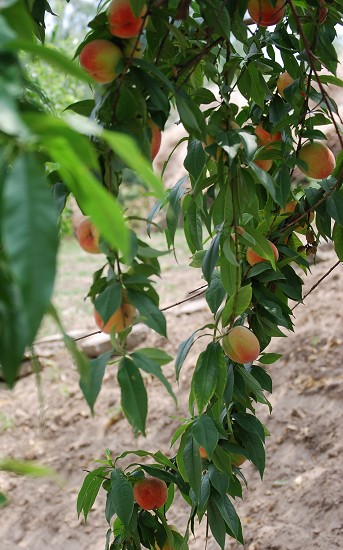
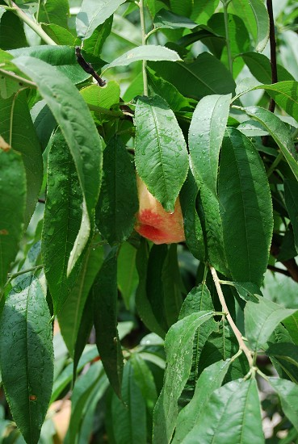
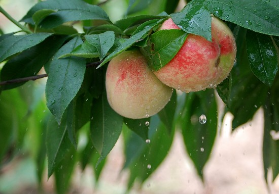
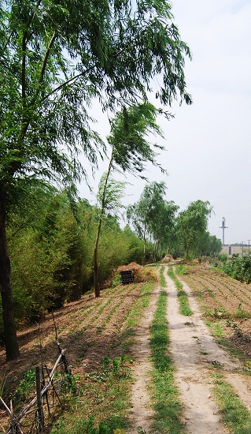
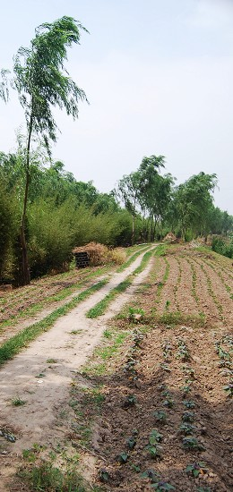
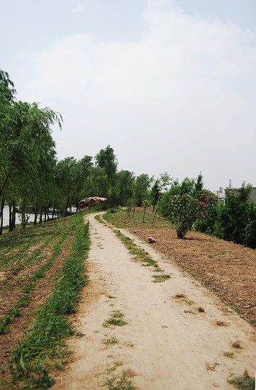
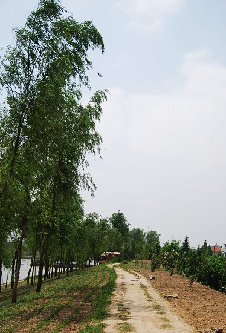
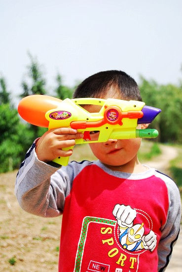

桃子、小路、小树
首页
抱朴守静
#1 桃子、小路、小树 作者：有志青年 发表时间：2007-6-10 16:32:57





#2 Re:桃子、小路、小树 作者：凝霜若雪 发表时间：2007-7-1 16:49:24
口水~怎么把小树放最后....
#3 Re:桃子、小路、小树 作者：朗星 发表时间：2007-7-20 13:19:08
喜欢左下的小路照片，有延远的感觉；小树照得好6分是孩子长得可爱，3.5分是技术问题；桃子上的水珠没照出图文共赏里那种晶莹剔透的美感，稍逊一筹，如果没有对照，有志的作品也是好滴。评点完毕！